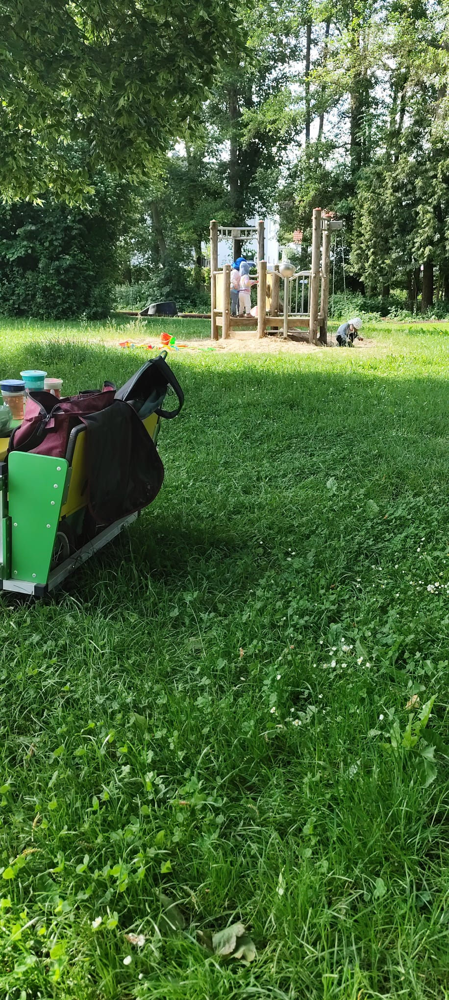

Über Uns
Mein Name ist Birgit Daude.
Als zertifizierte Tagespflegeperson betreue ich seit 2021 Kinder mit viel Herz, Engagement und Fachwissen in meiner Kindertagespflege "IllerKüken" im Herzen von Frankenberg (Eder). Ursprünglich als Vetretungstützpunkt eingerichtet, entstand hier ein Ort, an dem Kinder in einer liebevollen und familiären Atmosphäre aufwachsen, spielen und lernen können. Die hell und kindgerecht gestalteten Räumlichkeiten bieten vielfältige Möglichkeiten zum Entdecken, Bewegen und kreativen Gestalten.
Mir ist es besonders wichtig, dass sich jedes Kind vom ersten Tag an sicher, angenommen und geborgen fühlt. In einer kleinen Gruppe können die Kinder Freundschaften schließen, ihre Persönlichkeiten entfalten und ihre Fähigkeiten in ihrem eigenen Tempo entwickeln. Durch einen wertschätzenden und liebevollen Umgang begleite ich sie auf ihrem individuellen Entwicklungsweg.
Ein strukturierter Tagesablauf gibt den Kindern Orientierung und Sicherheit. Gemeinsame Mahlzeiten, Freispiel, kreative Angebote, Bewegung sowie Zeit an der Frischen Luft gehören selbstverständlich zu unserem Alltag.
Mit meinem Krippenwagen erkunden wir regelmäßig Frankenberg. Ob Spielplatzbesuche, Spaziergänge oder kleine Ausflüge - die Kinder erleben ihre Umwelt mit allen Sinnen und sammeln dabei wertvolle Erfahrungen.
Ich freue mich darauf, ihr Kind ein Stück seines Lebens begleiten zu dürfen und ihm einen Ort zu bieten, an dem es sich wohlfühlt, lachen, spielen und wachsen kann.
Herzlich willkommen bei den "IllerKüken"!

